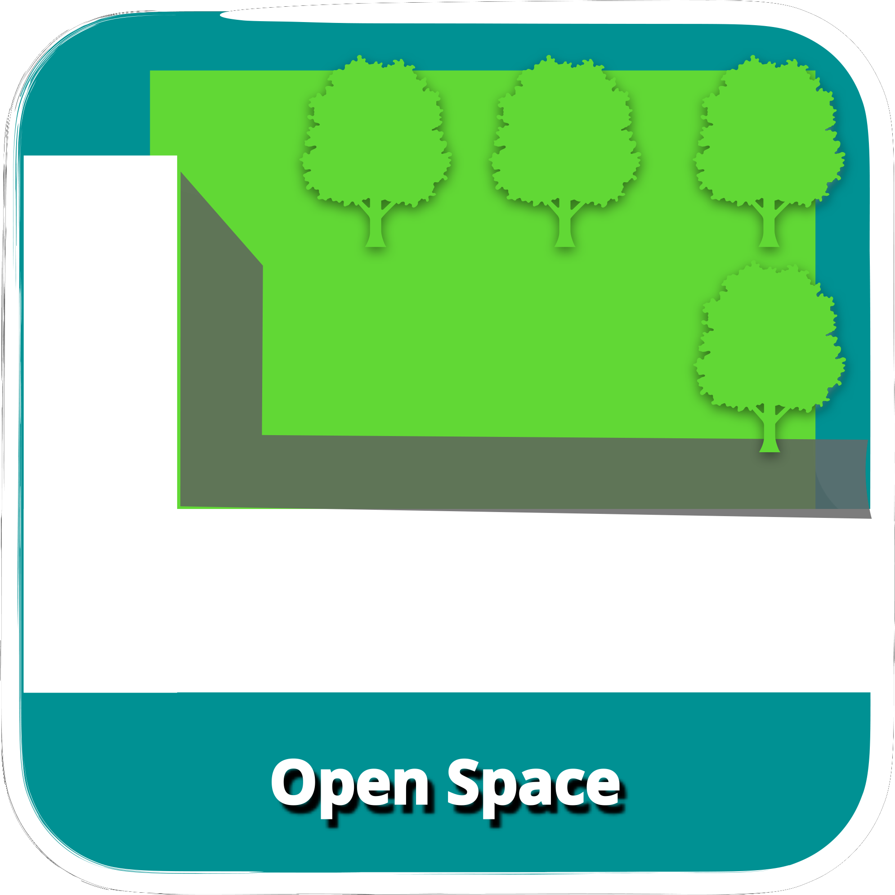
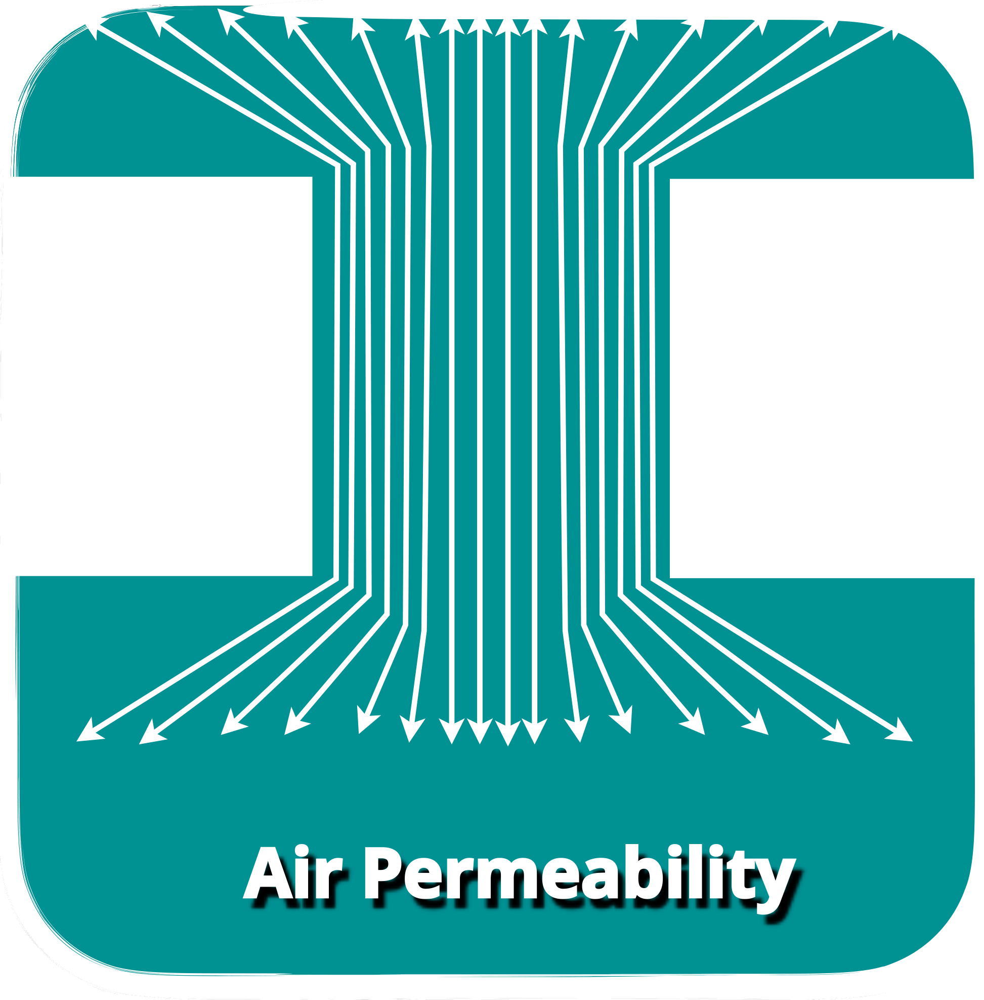
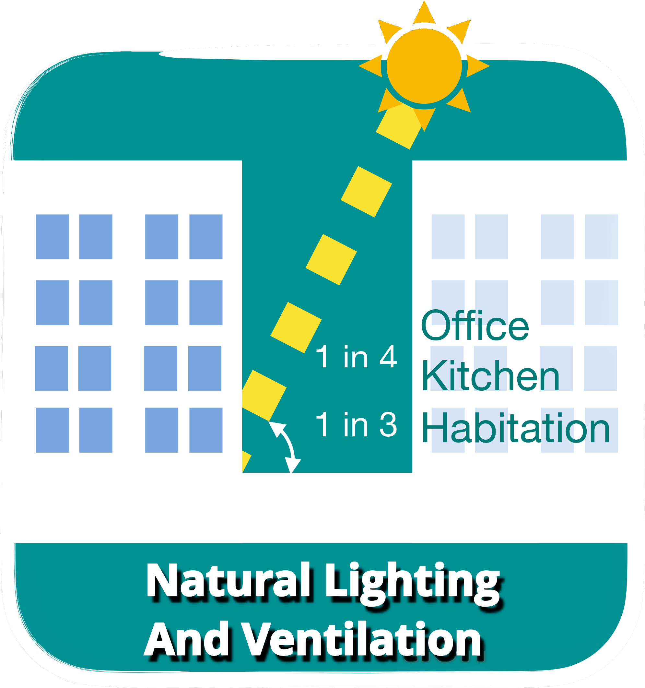
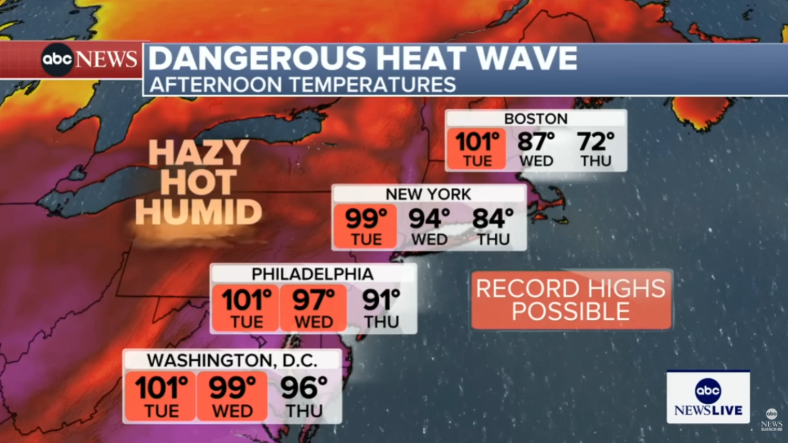
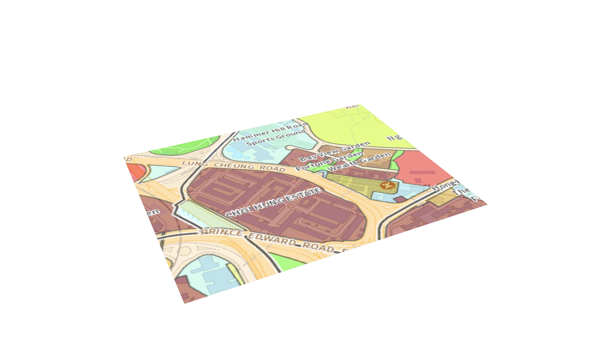
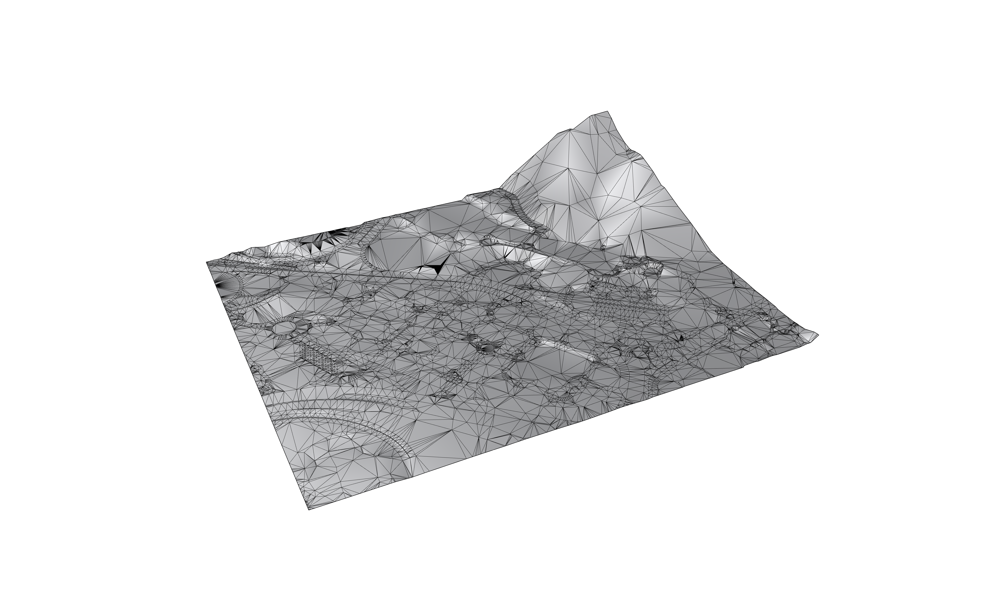
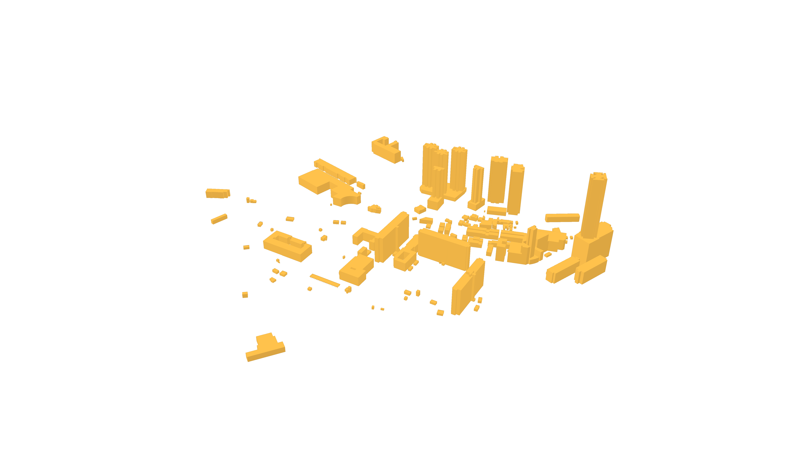
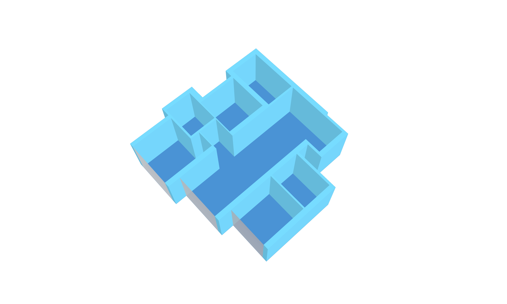
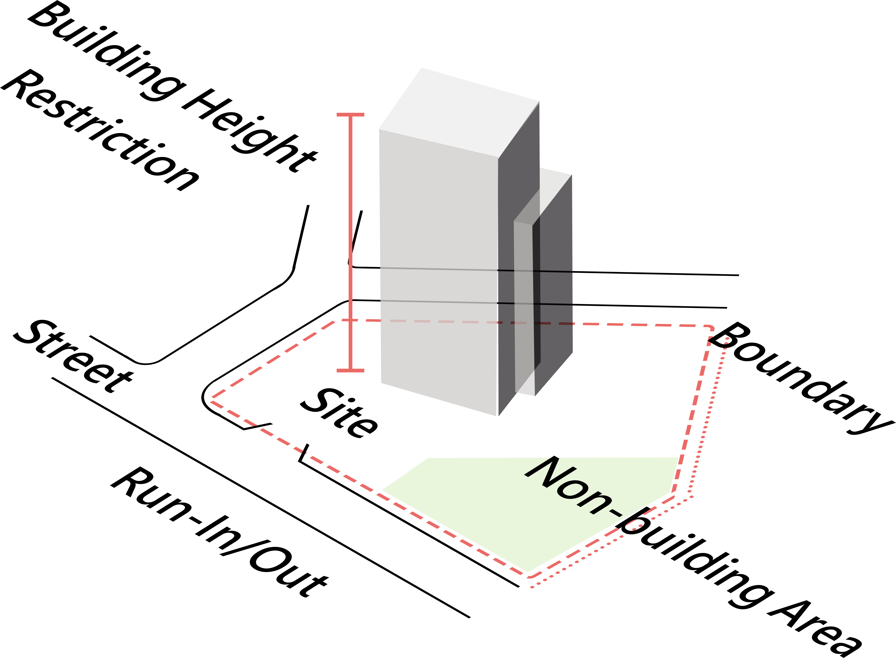

From Codes to Design
Parse regulations, zoning bylaws, building codes, accessibility standards, etc. into machine-readable rules



A BIM Building Permeability Checker – revolutionising building ventilation analysis and creating cooler and healthier cities in no time
About
UrbanCool Dynamics fuses fluid dynamics with openBIM technology to enhance building design for optimal airflow, enabling fast and user-friendly assessments that improve performance and resilience against urban heat amplified by climate change.
Based on scientific research and openBIM algorithm, the UrbanCool Dynamics is validated using Computational Fluid Dynamics (CFD) to assess air permeability of a building proposal through numerical analysis of the friction and turning cost of air pathways.
It envisions a future where designers can predict and optimise urban air movement of cities in real time — creating cooler, healthier, and more sustainable cities powered by science and open collaboration in the era of climate change.
THE PROBLEM
Extreme heat is becoming one of the most dangerous climate threats worldwide. Global cities are facing a growing threat from rising temperatures — increasing at 23% to 103% above the global average. Just five consecutive hot nights can raise mortality rates by up to 7%, while every 1°C increase may drive a 9.2% surge in residential electricity consumption.
+23 to +103%
compare to global trend
OVER 480,000 heat-related deaths
occur each year, according to WHO
Mean Temperature Anomaly for Global Cities
Cities' temperatures rise steeper than global average

Dense clusters of tall buildings trap heat and stall the wind, driving urban temperatures to rise much faster than the global average and exposing millions to dangerous thermal stress. The urban heat island effect compounds global warming, intensifying heatwaves and pushing up energy demand.
Our Solution
The UrbanCool Dynamics changes this paradigm by combining advanced airflow science with building design tools to enhance airflow performance around buildings, helping cities stay cool and liveable in a warming climate.
It enables architects to evaluate airflow performance at the concept or early schematic stage, guiding site planning, orientation, and form toward better lifecycle cost, energy, and carbon outcomes.
It is testified in Hong Kong, a high-density city role model, enhancing building permeability in LOW, MIDDLE and HIGH zones for thermal comfort in Streetscape, Neighbourhood and City scales.


The UrbanCool Dynamics is offered to industry at no cost as critical digital infrastructure for climate adaptation, helping to reduce health impacts, energy use, and productivity losses from extreme heat.
Wind slows down due to friction and turning. Inspired by the wind-protection effect of tree windbreaks, we use these two factors to evaluate building permeability.
Our new 3D Least Cost Path (LCP) method evaluates building permeability using two metrics, i.e. Friction Cost which represents airflow resistance, and Turning Cost which reflects path configuration complexities.
The UrbanCool Dynamics voxelises the 3D building model, traces potential airpaths, assigns friction costs near facades, and applies turning costs at each change in direction. It then calculates the cost along each airpath; a lower overall cost means better permeability.
By comparing LCP and CFD outputs using linear, power-law and logarithmic models, the strong agreement (R² = 0.92 and 0.85 for the power-law and logarithmic models respectively) indicates a close alignment between the developed LCP method and the widely adopted CFD methodology.

CITY SPATIAL DATA INTEGRATION
UrbanCool Dynamics retrieves site information such as site geometry, streets, urban form, land uses, and topography from an integrated city spatial data infrastructure to dynamically sculpt massing, the public realm, and the microclimate to deliver cool, walkable, and socially vibrant spaces under extreme heat.



Site Level
Extract accurate site profile to inform massing, setbacks and porosity opportunities for urban cooling
Street Connectivity
Inform climate resilient design and planning with mapped street widths, pedestrian and airflows, and potential thermal hot spots
Urban Form
Retrieve 3D city model around the site for their volumetric opportunities for urban ventilation and thermal relief
Adjacent Land Uses
Consolidate land use and potential crowd movement and heat exposure layers to inform public realm and amenities planning
Topographical
Feed site and city's terrain data for solar and wind analysis
INSTANT DESIGN REVIEW AND GENERATION
Apart from building permeability analysis, the design process is further streamlined and integrated. Design options can be generated instantly in response to user needs while complying with other regulatory requirements on overall development density and building height as well as spatial requirements including building setback, open space, natural lighting and ventilation, etc.
Parse regulations, zoning bylaws, building codes, accessibility standards, etc. into machine-readable rules



Instant-translate users' needs into spatial and functional blocks and 3D massing


Auto-generate massing options in response to site contexts, configuration and orientations


Recognition and Impacts
Good Health and Well-being
Mitigates heat-related health risks by lowering exposure to extreme urban temperatures, especially for vulnerable groups.
Industry, Innovation and Infrastructure
Provides innovative digital infrastructure (BIM-based automated checking, machine-readable codes) that modernises high-performance design and regulatory control workflows.
Sustainable Cities and Communities
Supports more resilient and sustainable urban layouts by optimising ventilation and reducing urban heat in dense cities.
Climate Action
Acts as climate adaptation infrastructure, helping cities cope with heat amplified by climate change via better design decisions.
ACHIEVEMENTS
Best Paper Award
Research PaperBest Innovation Award
Gold Award in API/Plugin Category
Winner in Research and Innovation Category
Value Enhancement Award